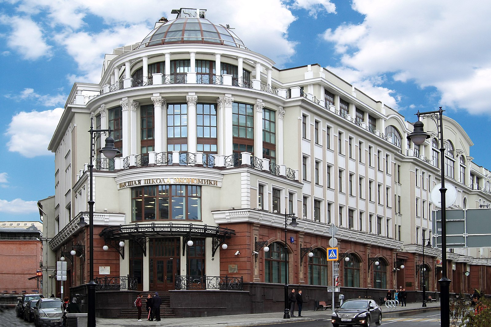

Об университете
Высшая школа экономики - ведущий российский университет, где каждый студент может найти глубокие знания по интересующей его специальности.
Мы предлагаем широкий спектр программ и курсов, обеспечиваем высокое качество образования и научных исследований.
Дата создания ВШЭ: .
Уровень знаний по HTML:
Пример использования 日本 (Япония) в тексте.